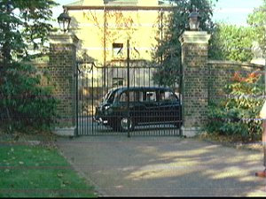
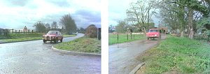
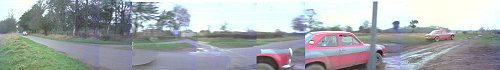
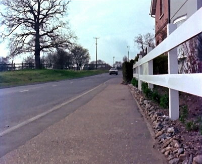

|
|
HELP FIND THE FOLLOWING LOCATIONS
PAGE 78
THE PROTECTORS: Balance
of Terror (Jeremy
Summers: Autumn 1972)
Hampstead Lane, London, N6: Colonel Krassinkov watches as The Contessa
and Harry leave the Soviet Embassy (Beechwood House) and take a taxi at
the gates.
Identified by Sietse Postma, January 2024


THE
PROTECTORS: Wheels (David Tomblin:
1973)
Unknown 1: A point on the route that Harry’s Ford Escort
rally car takes.

Unknown 2: A point on the route that Harry’s Ford Escort rally car takes.

Unknown 3: A point on the route that Harry’s Ford Escort rally car takes.

 Previous
footage
around Essendon.
Previous
footage
around Essendon.
Think you know a spot? Need a bigger image? Email me.
< Previous | Index | Avengerland | Next >
Copyright © 2021 Anthony R. McKay